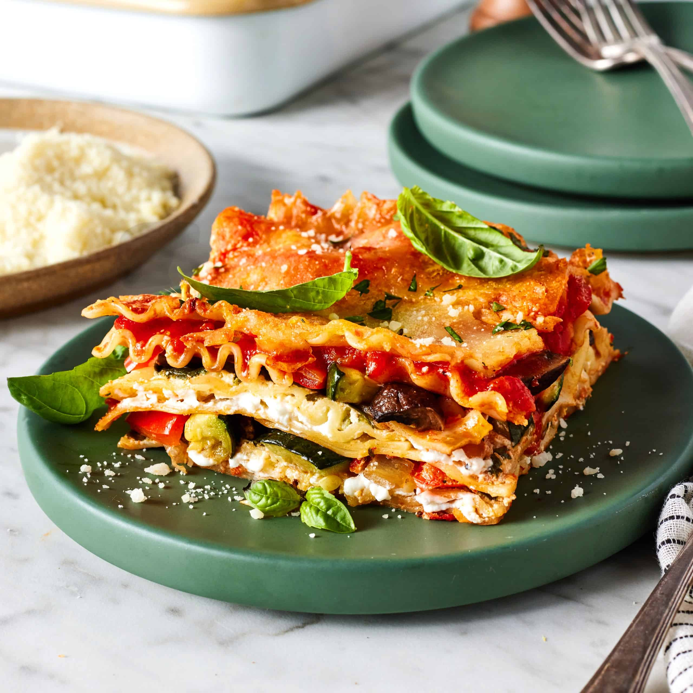

Welcome to Sustainable Eats
Your go-to source for delicious, eco-friendly recipes that help reduce food waste and promote sustainability.

Featured Recipe: Vegetarian Lasagna
This hearty and delicious vegetarian lasagna is made with fresh, sustainable ingredients. It's the perfect meal for any occasion!
Get the RecipeJoin Us in Reducing Food Waste
Share your own sustainable recipes with our community!
Submit Your RecipeWant to collaborate or ask questions? Check out our Contact Us page for all the details!